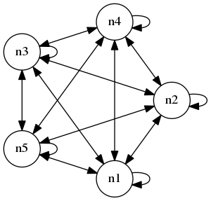

Using Pytorch to compute gradients explicitly in circuits of realistic complex neuronal models, especially those with very complex internal connections, can be very computationally expensive. Furthermore, I think that issues such as numerical stability will become significant because of all the multiplications over every timestep, among other factors. One idea is to compute gradients using something different to backpropogation. In particular, I tried out using finite difference methods instead, which, as far as I can tell online, is not a particularly well-researched idea, especially in terms of actual applications.
The idea is simple, suppose we have a function: $$f: A \rightarrow B, x \mapsto y.$$ Then, to measure the gradient of \(f\) with respect to \(x\), we can approximate it using a small perturbation \(\Delta x\): $$\frac{\partial f}{\partial x} \approx \frac{f(x + \Delta x) - f(x)}{\Delta x}.$$ Now, suppose we have some network of neurons, for example a fully connected network of 5 neurons with weights:
Suppose each neuron has some internal state \(V\) and some associated output \(a\) (these are dependent on time but I will not mention that for now). Let us denote the weighted output of all neurons as \(z\). So, if we put the weights into a 5 by 5 matrix \(W\), then $$z = W a$$ I think in most real networks, the matrix \(W\) will be sparse. Now, suppose we have some function \(f: \mathbb{R}^5 \rightarrow \mathbb{R}\) that quantifies the output into a single scalar. Suppose we want to measure how the weights affect \(f(z) = f(W a)\). At first, it might seem that we need to measure all weights' influence on this quantity. However, as in traditional backpropogation, we can actually just measure the influence of the weighted input \(z\) on \(f\) and then "interpolate" to the individual weights by an outer product. In particular, by the chain rule, $$D_{_W} f(z) = (\nabla f(z))^T \cdot D_{_W} z = (\nabla f(z))^T \cdot a^T,$$ so we just measure the left gradient \(\nabla f(z)\) (which, before the transpose, is a row vector), then take an outer product with the unweighted output \(a\).
Next, we compute the gradient using finite-difference methods. In particular, we compute the individual partial derivatives \(\partial f / \partial z_i\) which compose the gradient. This is done by the following: $$\frac{\partial f}{\partial z_i} \approx \frac{f(z_i + \Delta z_i) + f(z_i)}{\Delta z_i}.$$ The incremement \(\Delta z_i\) should be small, and I'm not sure what is a good criterion for choosing it exactly. My mind turns to grid computations and other stuff when I see the rule above but I haven't fleshed out those ideas yet.
In summary: to compute the total derivative \(D_{_W} f\), we first approximate \(\nabla f(z)\) as above, then we take an outer product with \(a\).
TODO: text goes here